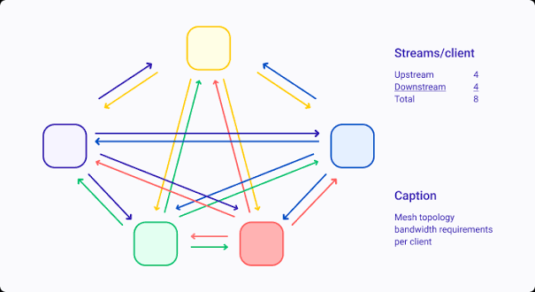
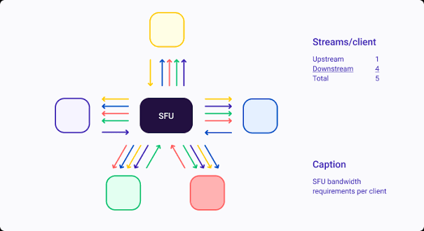
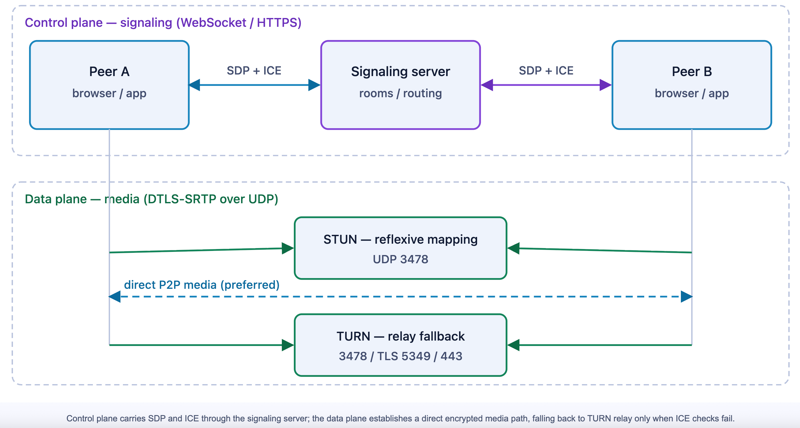
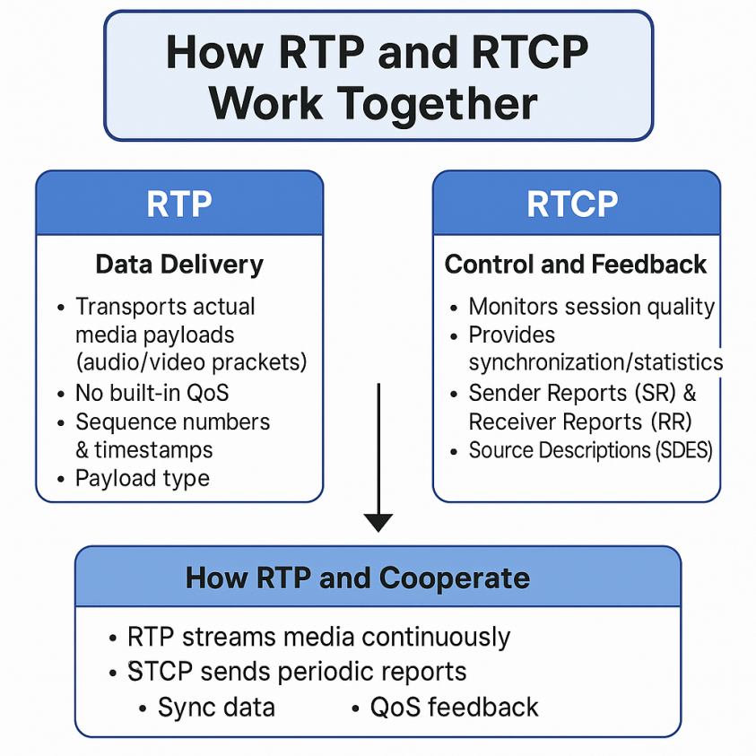
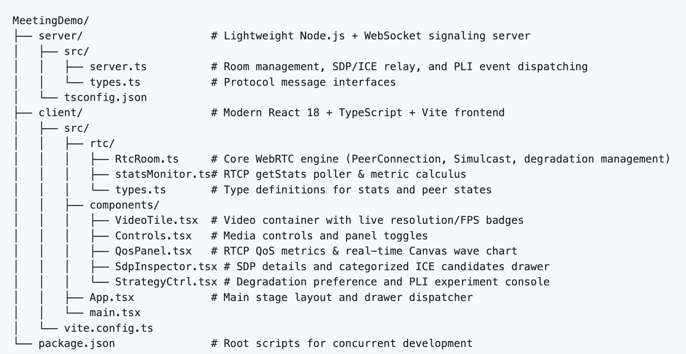

Core WebRTC Mechanisms and Practical Video Conferencing Analysis
[!NOTE]
Companion Open-Source Project & Demo: MeetingDemo/README_EN.md at main · wywwwwei/MeetingDemo
This article is accompanied by a full-stack, observable video conferencing lab—featuring live SDP/ICE candidate inspection, RTCP QoS telemetry, Simulcast multi-streaming, and PLI keyframe recovery.
1. Multi-Party Video Conferencing: Business Context and Core Contradictions
In multi-party collaborative video conferencing systems such as Zoom, Microsoft Teams, and Tencent Meeting, user requirements center around three core pillars: ultra-low end-to-end latency (typically sub-400ms), instant video rendering upon joining (first-frame fast rendering), and continuous fluency and clarity across complex, heterogeneous networks.
Unlike video-on-demand (VOD) or standard live streaming—which rely on client-side deep buffers spanning several seconds or even tens of seconds to absorb network jitter—real-time communication (RTC) is characterized by high concurrency and tight interactivity. Meeting participants engage in spontaneous speech, cross-talk, code reviews, and slide presentations. Introducing even a few seconds of buffer latency causes frequent speech collisions and awkward pauses. Therefore, RTC transmission strictly forbids deep buffering.
When participants connect from corporate enterprise intranets, residential Wi-Fi, and fluctuating cellular networks, the conferencing system must tightly coordinate across the transmission, transport, and codec layers. However, when architecting such a system, engineers must first resolve a fundamental topological dilemma:
Why Pure P2P Inevitably Fails in Multi-Party Conferencing
Many newcomers to WebRTC assume that “if two browsers acquire each other’s IP addresses, they can transmit UDP packets directly like in a local area network (LAN).” In real-world enterprise operations, this naive P2P model collides with insurmountable barriers at both the network layer and the architectural layer:
-
Network-Layer Roadblocks (Private Subnets and Symmetric NATs):
The vast majority of end-user devices reside behind residential routers (NAT44/NAT64) or corporate stateful firewalls, assigned private RFC 1918 IPs (e.g.,192.168.x.x). Private IPs are globally non-routable over the public internet. Furthermore, corporate firewalls drop any inbound external UDP packets not preceded by an outbound session initiated from inside the LAN. Under strict Symmetric NATs, external port mappings drift dynamically with each new destination IP, rendering conventional hole-punching mechanisms completely ineffective. -
Architectural-Layer Roadblocks (Full Mesh Bandwidth and CPU Explosion):
Even if a 2-party direct P2P call succeeds, scaling a meeting to three or more participants using a full-mesh topology causes client-side resource consumption to explode at an scale:


- Uplink Bandwidth Exhaustion: In a Full Mesh network, each participant must encode and upload their HD video stream times (once to every peer). In a 6-person call, an individual participant’s uplink must sustain 5 outgoing HD video streams (at least 7.5–10 Mbps), rapidly saturating residential and cellular uplink caps.
- CPU Encoding Saturation: Concurrently executing multiple independent hardware or software video encoders causes mobile devices and lightweight laptops to overheat, thermal throttle, and drop frames precipitously.
Key Architectural Conclusions:
- Traversing private network boundaries requires ICE / STUN / TURN for systematic path discovery and relay fallback.
- Large-scale multi-party conferencing must abandon client-to-client Full Mesh P2P in favor of an SFU (Selective Forwarding Unit) star topology—where each client pushes a single stream to a public SFU media server, which selectively routes and fans out streams to downstream peers with minimal processing overhead.
2. Connection Establishment
Before designing multi-party SFU topologies, a system must first master the fundamental atomic capability: how can two mutually unaware clients, isolated behind disparate firewalls, establish a secure, low-latency, bidirectional UDP media channel?
Because endpoints lack public IP visibility and cannot be resolved directly, WebRTC establishes connectivity through following progression:

1. Why a Signaling Service is Essential as the First Step
Before two endpoints can initiate a real-time call, they face total network isolation:
(1) Lack of Autonomous Discovery
- No Fixed Public Addressing: End-user devices are assigned dynamic private IPs and do not operate continuous listening sockets on public well-known ports (such as
80or443). - Complete Isolation: Located in separate private subnets, neither client knows the other exists, let alone their IP addresses or listening ports.
(2) The Role of Signaling: An Out-of-Band Control Channel
To break this isolation, clients must connect to a mutually accessible third-party rendezvous server: the Signaling Server (typically implemented over WebSocket or HTTP/2):
- Control Plane: The signaling server maintains room states (e.g.,
join-room,peer-left), and relays SDP session descriptions and ICE candidate information. This stage involves only lightweight JSON/text metadata exchanges. - Data Plane: Once the underlying media channel is established, raw audio/video payloads travel directly peer-to-peer (or client-to-SFU) via UDP/SRTP. Media traffic never traverses the signaling server, preventing it from becoming a CPU or network throughput bottleneck.

Design Rationale: Why Did W3C/IETF Leave Signaling Unstandardized?
Control metadata requires only reliable delivery. Applications can leverage WebSockets, SIP, MQTT, HTTP long-polling, or custom enterprise RPCs. By deliberately decoupling the signaling layer from the media engine, the specification grants application developers complete architectural freedom.
2. Media Capability Negotiation: Session Description Protocol (SDP)
Once signaling is active, endpoints must agree on codecs, resolutions, and cryptographic keys before transmitting any media. This negotiation is governed by SDP (Session Description Protocol, RFC 4566).
(1) SDP Structure and Semantics
SDP is a compact, plain-text format organized hierarchically into global session-level attributes followed by media-level stream sections:
1 | [Session-Level Metadata] |
(2) Offer/Answer Negotiation and Capability Intersection Pruning
Endpoints converge on parameters through the Offer/Answer interaction model:
- Offerer: Calls
createOffer()to generate an Offer SDP containing all locally supported codecs, profiles, transport attributes, and certificate fingerprints. - Answerer: Receives the Offer, evaluates it against its local capabilities, computes the intersection, and calls
createAnswer()to return an Answer SDP. - Capability Pruning: Any codec or feature not mutually supported is discarded or assigned port
0. Both peers adopt this agreed-upon intersection as their encoding, packetization, and encryption standard.
1 | // 1. Offerer generates an Offer and stores it locally |
3. Physical Routing Dilemma: RFC 1918 Private Addressing and Firewall Blocking
Even after converging on SDP parameters, physical packet routing faces immediate obstacles:
- Private IP Space (RFC 1918): Local physical adapters report private addresses such as
192.168.x.xor10.x.x.x. These addresses are valid only within local subnets and cannot be routed across public transit backbones. - Firewall “Default Deny Inbound” Policy: Residential NAT gateways and corporate stateful firewalls drop all inbound unsolicited UDP packets unless an internal host has previously initiated an outbound session to that specific external IP/port tuple.
Consequently, peers cannot connect simply by exchanging their local network adapter IPs.
4. NAT Traversal Architecture: In-Depth Comparison of STUN, TURN, and ICE
To overcome NAT and firewall barriers, WebRTC integrates standard IETF protocols:
| Specification | Entity Type | Architectural Responsibility | Resource Overhead and Latency Cost |
|---|---|---|---|
| STUN (RFC 5389) | Public Server | Enables clients to discover their public-facing mapped IP and port (srflx candidate). |
Negligible (involves only lightweight UDP Binding request/response probes). |
| TURN (RFC 5766) | Public Media Relay Server | When direct hole-punching fails, acts as a cloud relay, forwarding all media traffic (relay candidate). |
High (incurs ongoing bandwidth costs and introduces relay routing hops). |
| ICE (RFC 8445) | Path Decision Framework (Algorithm) | Collects all candidate paths, exchanges them via signaling, pairs them, and executes connectivity checks to select the optimal path. | Runs locally within client RTC stacks; computational cost is negligible. |
1 | sequenceDiagram |
(1) STUN: Discovering Server Reflexive (srflx) Addresses
An internal host transmits a UDP Binding Request to a public STUN server. The STUN server inspects the source UDP header and echoes the detected public IP and port back inside the XOR-MAPPED-ADDRESS attribute.
- The client learns its public NAT gateway footprint (the
srflxcandidate). - Technical Limitation: When operating behind Symmetric NAT, the router assigns a unique, randomized port for each distinct destination IP. The port discovered via the STUN server does not match the port opened when attempting to send packets to peer B. Consequently, incoming hole-punching packets are rejected by the firewall.
(2) TURN: Guaranteed Fallback via Media Relaying
When Symmetric NAT or enterprise firewalls preclude direct hole-punching, TURN serves as the ultimate fallback:
- The client requests an allocation on a public TURN server (
relaycandidate). - Both endpoints transmit their encrypted media payloads directly to the TURN server, which forwards them to the remote peer.
- Engineering Trade-Off: Provides 100% connectivity assurance at the expense of server bandwidth consumption and added network latency.
(3) ICE: Unified Path Decision and Connectivity Checking
ICE is an algorithmic framework, not a server. It orchestrates connectivity through three stages:
- Candidate Harvesting:
- Host Candidate: Local network adapter IP (ideal for LAN calls, sub-2ms latency, zero cloud transit cost).
- srflx Candidate: Publicly mapped reflection discovered via STUN (for direct calls across standard Cone NATs).
- relay Candidate: Relayed transport address allocated on a TURN server (fallback for symmetric NATs).
- Candidate Exchange: Candidates are serialized and transmitted to the remote peer via the signaling channel.
- Connectivity Checks and Path Nomination:
Local and remote candidates are cross-paired into candidate pairs and sorted by priority (Host > srflx > relay). The ICE agent issues STUN Binding Ping requests over each pair. The highest-priority pair that successfully responds is nominated as the active communication path (Nominated Pair).
5. Coordinated Pipeline: Trickle ICE Incremental Candidate Mechanism
In production deployments, candidate discovery must balance setup latency with path optimality:
- Vanilla ICE (Legacy): Gathers all local, STUN, and TURN candidates before packaging them into a single monolithic SDP. Because public STUN and TURN resolutions depend on round-trip delays, this causes noticeable 2–3 second white-screen delays before call initiation.
- Trickle ICE (RFC 8838): The modern standard based on asynchronous, pipelined gathering:
createOffer/createAnswergenerates an initial SDP containing only media parameters and DTLS fingerprints. This is transmitted over signaling immediately to lock in codec compatibility.- Concurrently, the ICE agent queries local adapters, STUN, and TURN in the background. As each candidate surfaces, an
icecandidateevent fires. - Clients trickle individual candidates to their peer over signaling in real time; the remote endpoint injects them on the fly via
addIceCandidate().
1 | // 1. Initialize RTCPeerConnection with STUN/TURN configurations |
Through Trickle ICE, codec negotiation and network path probing execute entirely in parallel, compressing call setup time to 200–400ms and ensuring rapid video rendering.
Once path nomination concludes, endpoints possess a verified bidirectional UDP transport. Audio/video streams can now be packetized, monitored, and encrypted over this link.
3. Media Transmission and Security Substrate
Once UDP transport paths are established, media packetization and quality feedback are governed by the RTP/RTCP protocol suite, secured end-to-end by DTLS-SRTP.
1. What Problems Do RTP and RTCP Solve Respectively?

(1) RTP Header Design: Solving Sequence and Timing
- Sequence Number (16-bit): Increments by 1 with each transmitted packet. Receivers inspect sequence continuity to identify packet loss, reordering, and duplicates.
- Timestamp (32-bit): Advances according to the media sampling clock (90kHz for video, 48kHz for audio). Reflects relative sampling instants to ensure smooth frame rendering and jitter computation.
- SSRC (Synchronization Source, 32-bit): A globally unique identifier distinguishing individual media tracks. A participant’s camera, microphone, and screen share each transmit under distinct SSRCs.
- Marker Bit (1-bit): In video streams, when an encoded frame spans multiple RTP packets, the Marker bit is set to 1 on the final packet, signaling frame boundaries to the jitter buffer.
(2) RTCP Feedback Mechanisms: Constructing Closed-Loop Control
Because UDP is inherently unacknowledged, RTCP packets establish a telemetry feedback loop:
- Sender Reports (SR) and Lip Sync (AV Sync): Audio and video sampling clocks run independently at different frequencies with random initial offsets. Senders periodically dispatch SR packets correlating absolute 64-bit NTP timestamps with corresponding RTP timestamps. Receivers align incoming audio and video streams along this unified physical timeline, eliminating lip-sync drift.
- Receiver Reports (RR) and Accurate RTT Derivation: Receivers transmit RR packets reporting observed loss and jitter. Senders evaluate the local arrival time against report fields
LSR(Last SR timestamp) andDLSR(Delay Since Last SR) to compute round-trip time:
1 | // Extract RTCP QoS telemetry using the standard W3C getStats() API |
2. Why is DTLS-SRTP the Security Cornerstone of WebRTC?
The WebRTC specification mandates that all media streams must be encrypted end-to-end; unencrypted plain-text transmission is strictly disallowed. This is implemented via DTLS-SRTP (RFC 5764).
1 | sequenceDiagram |
Why Not Transmit Audio/Video Directly over DTLS Records?
- Excessive Protocol Overhead: DTLS record framing introduces heavy per-packet overhead and strict sequence validation unnecessary for loss-tolerant real-time media.
- Hybrid Architecture: DTLS executes only once during initial connection setup to perform asymmetric authentication and negotiate symmetric keying material. High-throughput media frames are then protected by lightweight SRTP (Secure RTP) leveraging hardware AES-NI instructions, achieving strong cryptographic security with negligible CPU overhead.
4. QoS and Dynamic Adaptation Strategies in Weak Network Conditions
Public UDP transmission is inherently vulnerable to Wi-Fi channel contention, cellular handovers, and bufferbloat, resulting in packet loss and jitter.
1. How Do RTT, Packet Loss, and Jitter Degrade Meeting Experience?
| Network Anomaly | Direct Impact on User Experience | Architectural Countermeasures |
|---|---|---|
| Elevated RTT () | Conversational cross-talk and awkward pauses. Speakers interrupt each other due to delayed audio feedback. | Suppress deep retransmissions; deploy proactive Forward Error Correction (FEC); minimize jitter buffer depth. |
| Jitter | Robotic, staggered, or distorted audio caused by irregular inter-arrival intervals. | Adaptive JitterBuffer: Dynamically estimates delay variance to release frames at steady intervals to decoders. |
| Packet Loss | Blocky video artifacts, green screens, audio dropouts due to missing reference frames. | 1. NACK: Selective negative acknowledgment retransmissions. 2. PLI/FIR: Fast keyframe generation to break decoding dependency corruption. |
| Bandwidth Collapse | Bottleneck routers overflow, inducing cascading loss and video stalls. | TCC + Pacer: Queue-delay-sensitive bandwidth estimation and smoothed packet pacing; coupled with Degradation Preferences. |
2. Core Countermeasures Analyzed
(1) Adaptive JitterBuffer
Incoming RTP packets are queued and sorted by timestamp before being dispatched to decoders. Under stable network conditions, the buffer contracts to reduce end-to-end latency; during jitter spikes, it dynamically expands, sacrificing tens of milliseconds of latency to prevent playback stalls.
(2) Negative Acknowledgment (NACK)
When a receiver observes gaps in incoming RTP sequence numbers, it requests retransmission from the sender.
- Operational Boundary: Highly effective in metro networks where . In transoceanic links (), waiting for retransmissions breaches frame playback deadlines. In such scenarios, systems suppress NACKs and rely instead on proactive FEC redundancy.
(3) Keyframe Fast Recovery: PLI and FIR
Video codecs rely on inter-frame compression (P-frames referencing prior I- or P-frames). When reference frames are irrevocably lost, downstream frames cannot be decoded, causing video corruption.
- PLI (Picture Loss Indication): Alerts the sender to partial reference loss, requesting a keyframe at the encoder’s earliest convenience.
- FIR (Full Intra Request): Unconditionally commands the sender’s encoder to immediately produce a full IDR keyframe. Widely utilized for active speaker switching and fast first-frame rendering upon joining.
1 | // Receiver: Request an immediate keyframe refresh over signaling upon detecting corruption |
3. Application-Layer Adaptive Strategies in Video Conferencing
(1) Degradation Preference (degradationPreference)
WebRTC exposes application-layer prioritization to intelligently manage encoding trade-offs under bandwidth constraints:
maintain-resolution:- Use Case: Desktop screen sharing, slide presentations, document review, and code walkthroughs.
- Strategy: Fine text and diagrams must remain crisp. Under bandwidth crunches, the encoder aggressively reduces frame rate (e.g., from 30fps down to 5fps) while strictly preserving 1080p resolution.
maintain-framerate:- Use Case: Headshot camera streams, speaker facial expressions, and gesture interaction.
- Strategy: Smooth motion and lip synchronization are paramount. Under bandwidth crunches, the encoder downscales resolution (e.g., from 720p to 360p) to preserve a fluid 24–30fps.
1 | // Dynamically adjust sender degradation preference |
(2) Multi-Stream Distribution: Simulcast and SVC
In multi-party meetings, participants operate with heterogeneous downlink bandwidths. Broadcasters cannot degrade stream quality for all participants simply because one peer suffers a poor connection.
- Simulcast: The sender’s device concurrently encodes 2–3 streams of varying resolutions and bitrates from the same camera source (e.g., High 1080p@2Mbps, Mid 360p@500Kbps, Low 180p@150Kbps), tagging each with distinct SSRCs before uploading to an SFU.
- SFU Dynamic Routing: The SFU routes the 180p stream to thumbnail gallery views and the 1080p stream to the active speaker’s spotlight view. If a participant’s link deteriorates, the SFU seamlessly down-switches them to the 360p layer without disrupting the sender or other peers.
1 | // Configure 3-layer Simulcast encodings when adding video tracks |
5. Practical Implementation and Traffic Inspection
This repository includes a fully operational, observable video conferencing demo:

Industrial-Grade Browser Inspection: chrome://webrtc-internals
When evaluating this demo, open chrome://webrtc-internals in a separate browser tab—the indispensable diagnostic suite for WebRTC engineers:
1 | [Diagnostic Tree] |
6. End-to-End Lifecycle Sequence Diagram
The following sequence diagram consolidates the complete lifecycle of a call—from initial signaling to video rendering:
1 | sequenceDiagram |
Conclusion
The essence of WebRTC lies not merely in calling browser APIs, but in the tight, closed-loop coordination across network discovery (ICE), applied cryptography (DTLS-SRTP), real-time flow control (RTP/RTCP), and adaptive recovery (JitterBuffer/TCC/PLI). We hope this comprehensive analysis—spanning business realities, protocol mechanics, and traffic inspection—provides you with a robust mental model for diagnosing latency, eliminating media stalls, and architecting resilient enterprise video systems.
Reference Link
Anatomy of a WebRTC Connection | WebRTC for Developers
WebRTC in System Design: Signaling, NAT Traversal, STUN/TURN & SFU (Visualized)
Webrtc Protocol Stack Signaling Servers
https://webrtc.ventures/2025/02/a-quick-tour-of-webrtc-internals-a-powerful-webrtc-debugging-tool/